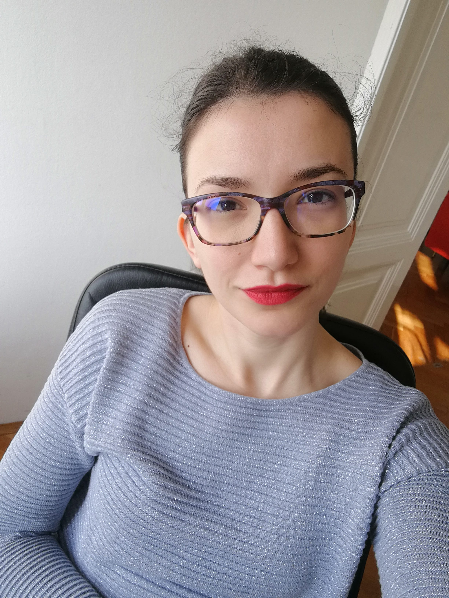

About Me | Portfolio | Hobbies
Hi there, I am a Croatian living in Jyväskylä and an ICT student at JAMK.
I am a geographer with a Master's degree in spatial planning and regional development.
Also, I have 4.5 years of work experience in the GIS industry and management consulting.
In 2020, I have decided to move to Finland permanently together with my Finnish fiancé.
I am passionate about data analysis and GIS technologies and its application to promote sustainable development.
As I was always interested in IT and I am always working on improving my skills, I decided to apply to ICT programme at JAMK and make a career change.